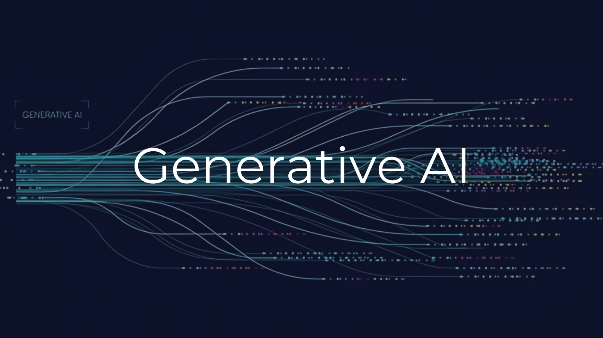

Data Science
Exploring the world of data through innovative analysis and visualization, my projects are developed in Jupyter Notebook and cover topics like exploratory data analysis, predictive modeling, data cleaning, and machine learning. Complementing these, my Medium articles dive deeper into the methodologies and insights gained, making complex concepts accessible to a broader audience. Together, they reflect my passion for turning raw data into meaningful stories.
Machine Learning
My machine learning projects delve into diverse algorithms, including neural networks, linear models along with regularization, and k-nearest neighbors (KNNs). These projects tackle real-world problems such as classification, regression, and prediction, showcasing the power of machine learning to uncover patterns in complex datasets. Through hands-on experimentation and detailed analysis, I demonstrate a strong understanding of model development and evaluation.
Deep Learning
My deep learning projects cover a comprehensive range of topics, from building neural networks for classification and regression tasks to advanced methods like convolutional neural networks (CNNs), autoencoders, and generative adversarial networks (GANs). These projects also include hyperparameter tuning and network compression techniques, ensuring both performance optimization and model efficiency for a diverse range of interesting real-world applications.

Generative AI
My generative AI projects leverage state-of-the-art technologies, focusing on language, vision, and multimodal applications. From designing neural networks for text generation and machine translation to exploring transformer architectures like GPT and BERT, these projects emphasize the practical application of pre-trained models and fine-tuning techniques. I’ve also worked on retrieval-augmented generation (RAG) and prompt engineering, demonstrating my ability to solve real-world problems.
Operating Systems
My machine learning projects delve into diverse algorithms, including neural networks, linear models along with regularization, and k-nearest neighbors (KNNs). These projects tackle real-world problems such as classification, regression, and prediction, showcasing the power of machine learning to uncover patterns in complex datasets. Through hands-on experimentation and detailed analysis, I demonstrate a strong understanding of model development and evaluation.
Web Development Projects
"By leveraging technologies such as Next.js and React, I have developed a diverse portfolio of web development projects that showcase a blend of technical functionality and visually appealing designs. My expertise lies in integrating robust APIs to deliver dynamic and responsive user experiences that address real-world problems. From crafting user-centric interfaces to implementing seamless backend connections, these projects demonstrate my ability to handle the full spectrum of web application development."